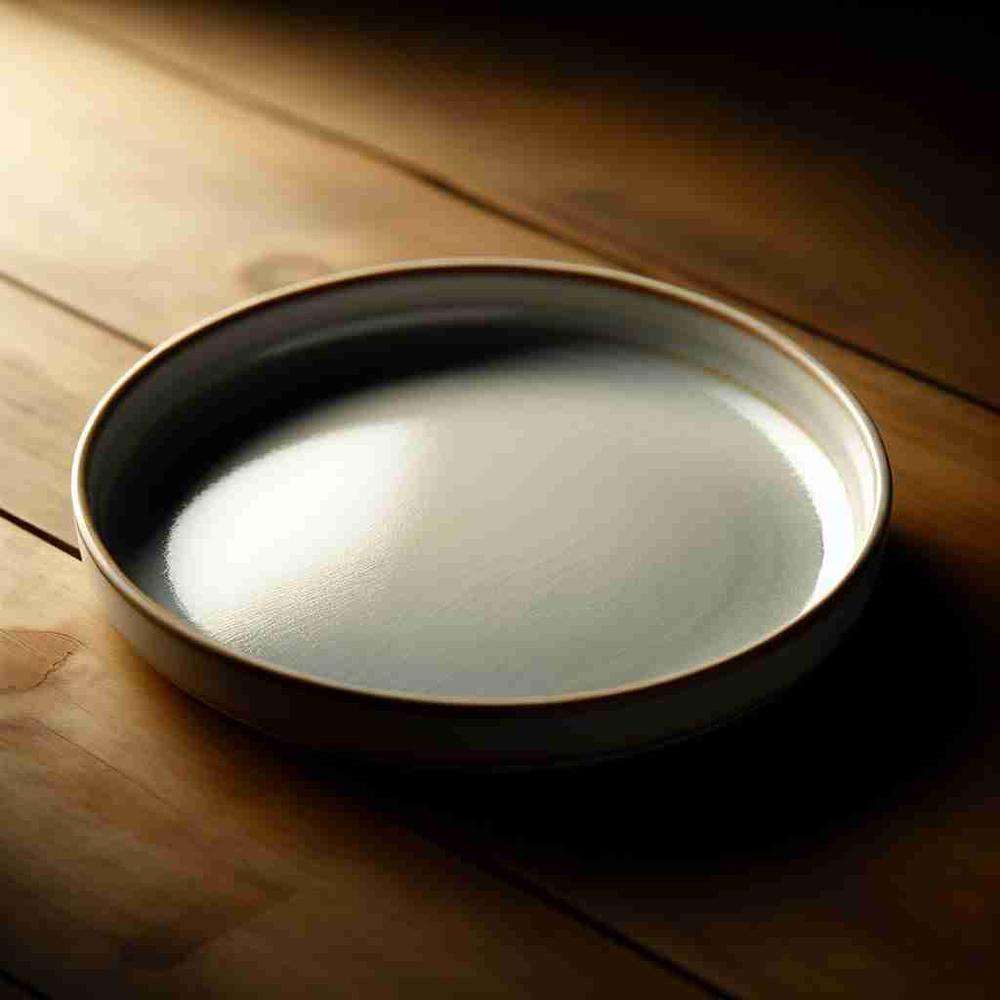

💬 I like to serve food on a plate.

💬 I will serve food on a plate for dinner.
🔈 [pleɪt]
🗝️ n. a flat, usually circular dish that you put food on
🖼️ 在一个温馨的家庭晚餐中，桌上摆满了各种美味佳肴。每个人面前都摆着一个精美的瓷盘，上面盛满了香喷喷的食物，体现了'plate'作为餐具的含义。
🔍 想象一个平坦的餐盘（plate）。这个核心形象可以帮助你联想到各种平板状的物体，无论是金属板、玻璃板还是地质板块。同时，'plate'也可以引申为在表面覆盖一层（如电镀），或者指代盘中的食物。通过这个核心意象，你可以更容易理解和记忆'plate'的多重含义。
💬 I like to serve food on a plate.
💬 I will serve food on a plate for dinner.
🌳 来源于拉丁词根 'platus'，意为 '平坦的'。在英语中，'plate' 表示盘子或板子的概念，指的是一个平坦的物体。
💡 可以通过 '平坦的板子' 来联想 'plate'，例如餐桌上的盘子是平的，这样更容易记住这个单词。
🗝️ n. a thin, flat sheet of metal, plastic, etc.
🖼️ 在一间工厂里，工人们正在操作机器，将一片片金属薄板从生产线上小心取下。这些薄板整齐地堆放在一起，等待进一步加工，展示了'plate'作为薄片的含义。
💬 The door had a brass name plate on it.
❓ 形状与餐盘相似
🗝️ n. a sheet of metal, glass, etc. used in various technical processes
🖼️ 在一个高科技实验室中，技术人员正在使用一片透明的玻璃板来进行光谱分析。这片玻璃板在灯光下闪闪发光，成为了复杂实验的一部分，展示了'plate'在技术应用中的含义。
💬 The X-ray was taken using a photographic plate.
❓ 源于平板形状，用于特定技术领域
🗝️ n. one of the moving parts of the Earth's surface
🖼️ 在地质博物馆里，导游指着一幅地球模型，解释说："这些大块的板块不断移动和撞击，形成了地震和火山活动。"这里展示了'plate'作为地质板块的含义。
💬 The Pacific Plate is moving northwestward.
❓ 地质学中的平板状结构
🗝️ v. to coat a metal object with a thin layer of another metal
🖼️ 在一个金工坊里，技师将一个铜质的手镯放入一个溶液中。经过一段时间，手镯被镀上了一层闪亮的银，体现了'plate'作为电镀过程的动词意义。
💬 The jewelry was plated with gold.
❓ 在表面覆盖一层，如同在盘子上放食物
🗝️ n. a course or serving of food
🖼️ 在一个高档餐厅里，服务员为客人们端上不同的菜肴。主厨精心设计的每一道菜都被安排在精美的盘子上，这道菜作为今日的主打盘展示了'plate'作为一道菜品或餐的含义。
💬 The restaurant offers a plate of the day.
❓ 由盛放食物的容器引申为食物本身